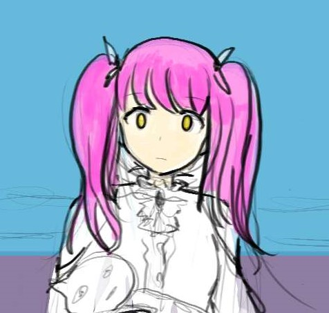
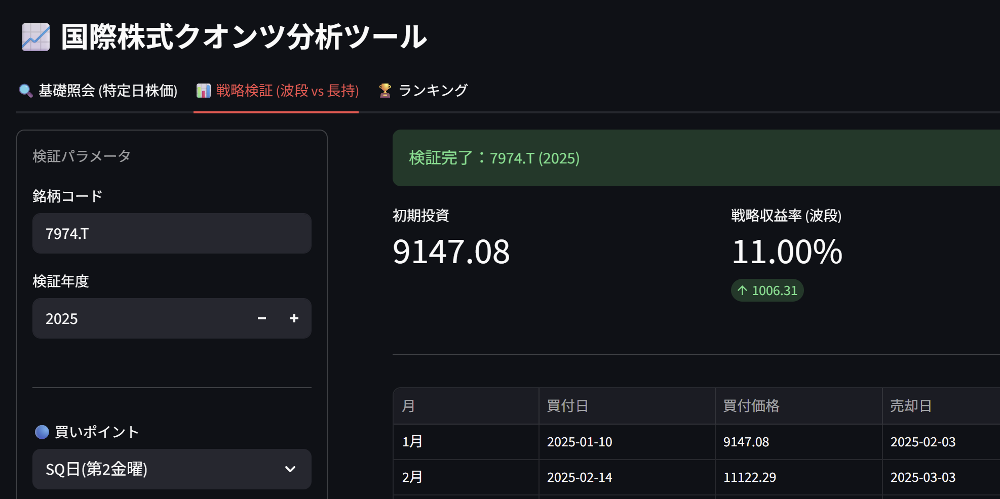
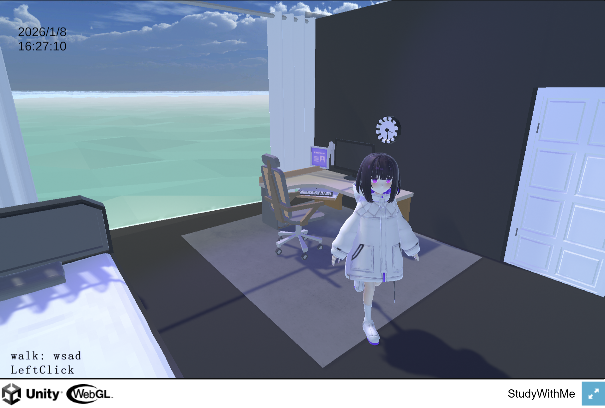
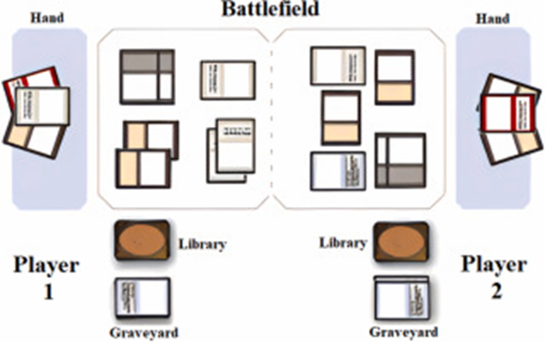

基于 Python 的 A 股 ETF 自动监控与回测平台。解决 IP 封锁问题，实现多维度动能可视化。专业与实操的结合。

专注于“氛围感”的 Unity 实验项目。通过 WebGL 探索用户在学习场景下的视觉焦点与交互密度。支持全设备访问。

LLM-based visual novel generation. Presented at IEEE GCCE 2025. 一键将文学作品转化为可交互的互动小说。
注：由于 GitHub Pages 是静态的，点保存后我会为你生成代码。你只需把代码粘贴回 index.html 即可永久保存。